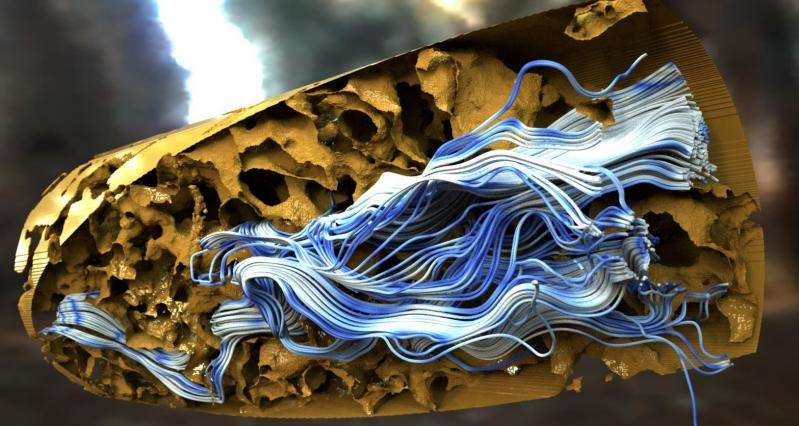
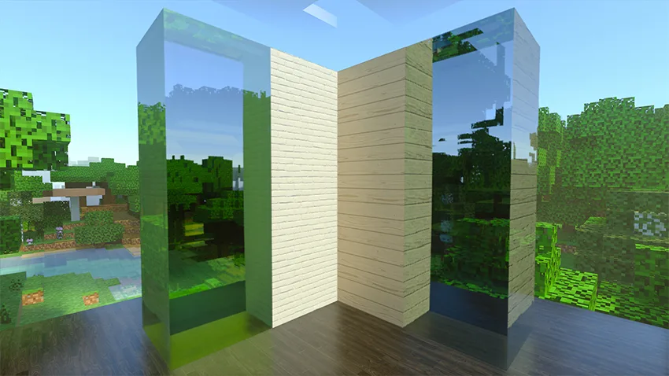

Product Visualization
Ray-traced kitchen environment from IKEA. Image from lab at rockwellgroup.
Allows for photo-realistic images that can be used in catalogs and advertising. Many companies use this as it creates flexibility and significantly reduces costs as there is no physical creation of products. One such company is IKEA as they use many ray-traced images in their catalog, allowing them to avoid the creation for advertising.
Science
Image from PHYS ORG.
There are many uses for tracing in science. From the medical field, military, or other scientific fields. Some of the amazing applications is it is used to propagate sound waves, and to trace the trajectory of bullets and shrapnel.
Computer Graphics
Image from Pixar Animation Studios.
The most known and useful application is in film and video games. Film creators in Hollywood are especially fond of its use in animation, as it has been present in the movie Cars, The Abyss, and some frames in A Bug's Life.
Its use in video games is the most common and the most fascinating application. It is the future of the industry and is one of the most complicated and complex aspects. Rendering individual light reflections and refractions for the high-frame-rate, high-detailed environments in video games makes them extremely difficult to implement. However, it generates a highly-immersive experience for the user when implemented correctly.
Programming
Image from Reviewed.
Tracing rays is highly complex and tedious, which computers and programs are amazing at handling. Using equations and principles for intersection with objects, reflection, and refraction, computers can simulate the most realistic of digital scenes.
Programs can trace millions of rays reflecting, refracting, and interacting with objects. For some examples of basic ray tracing programs see Scratchapixel or Rayground.
Some great resources to start learning ray trace programming are